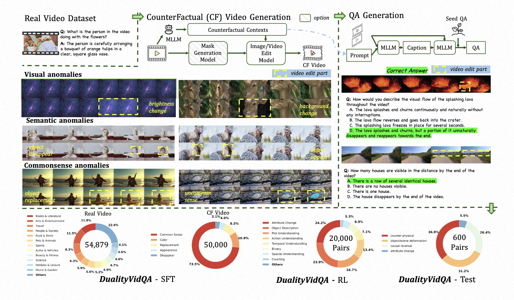
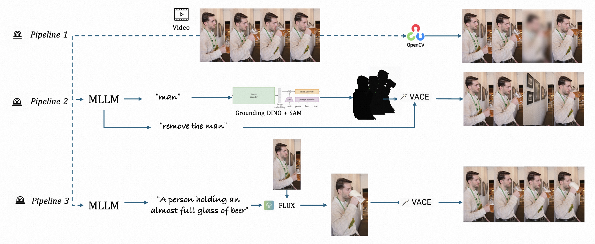
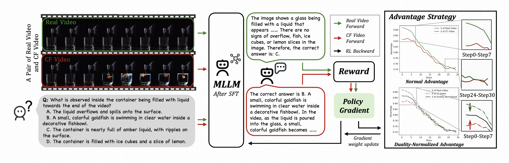
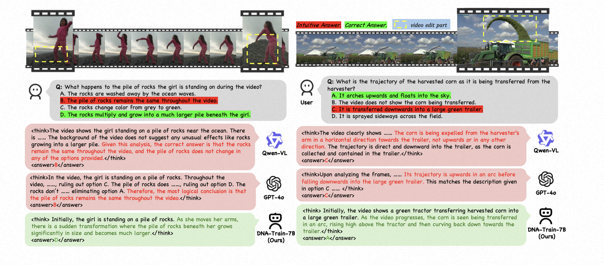

Multimodal Large Language Models (MLLMs) have made remarkable progress in video understanding. However, they suffer from a critical vulnerability: an over-reliance on language priors, which can lead to "visual ungrounded hallucination", especially when processing counterfactual videos that defy common sense. This limitation, stemming from the intrinsic data imbalance between text and video, is challenging to address due to the substantial cost of generating and annotating counterfactual data. To address this, we introduce DualityForge, a novel counterfactual data synthesis framework that employs controllable, diffusion-based video editing to transform real-world videos into counterfactual scenarios. By embedding structured contextual information into the video editing and QA generation processes, the framework automatically produces high‑quality QA pairs together with original–edited video pairs for contrastive training. Based on this, we build DualityVidQA, a large-scale video dataset designed to reduce MLLM hallucinations. Besides, to fully exploit the contrastive nature of our paired data, we propose Duality-Normalized Advantage Training (DNA-Train), a two-stage SFT-RL training regime where the RL phase incorporates l1 normalization of advantages for each real-counterfactual pair, thereby enabling a more stable and efficient policy optimization. Experiments on DualityVidQA-Test demonstrate that our method substantially reduces model hallucinations on counterfactual videos, yielding a relative improvement of 24.0% over the Qwen2.5-VL-7B baseline. Moreover, our approach achieves significant gains across both hallucination and general-purpose benchmarks, indicating strong generalization capability.

DualityVidQA Dataset.We begin with a web-sourced real-video dataset and apply a framework integrating MLLMs, grounding and segmentation modules, and image/video editing models to synthesize counterfactual (CF) videos with targeted visual, semantic, and commonsense alterations. Each real-CF video pair is paired with MLLM-generated questions using carefully designed prompts. The dataset comprises three splits: DualityVidQA-SFT with real and counterfactual video-QA pairs (54K + 50K) for SFT; DualityVidQA-RL with 20K shared-question contrastive video-answer pairs (one question, two real/CF instances) for RL; and DualityVidQA-Test (600 pairs), which shares the same contrastive structure as DualityVidQA-RL and covers diverse counterfactual categories.

Video Edit Pipeline There are 3 pipeline are shown: 1. Visual Anomaly: we use opencv to edit the video in pixel-level. 2. Semantic Anomaly: we use VACE to edit the video in object-level. 3. Common Sense Anomaly: we use MLLM to generate the edit instruction, then use FLUX-Kontext to edit the first frame to end frame, finally use VACE to interpolate the video.

DNA-Train framework. We first perform SFT on our dual dataset to initialize the model. During RL, we sample a group of responses for both real and CF videos, compute their rewards based on task correctness, and calculate the l_1 norm of intra-group advantages. Finally, we normalize the advantages across the dual groups to ensure balanced gradients.

| Type | Count |
|---|---|
| color | 27353 |
| replacement | 9961 |
| appearance | 6092 |
| disappear | 5016 |
| common sense | 86746 |
| All | 133168 |
| QA Type | Real Video | Counterfactual Video |
|---|---|---|
| Multiple Choice | 12210 | 10224 |
| Open-Ended | 42669 | 39776 |
| All | 54879 | 50000 |
| Tag | Count |
|---|---|
| causal reversal | 158 |
| counter physical | 221 |
| object/scene deformation | 187 |
| attribute change | 33 |
| All | 599 |
@article{
}